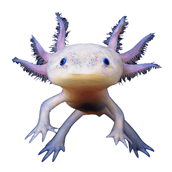
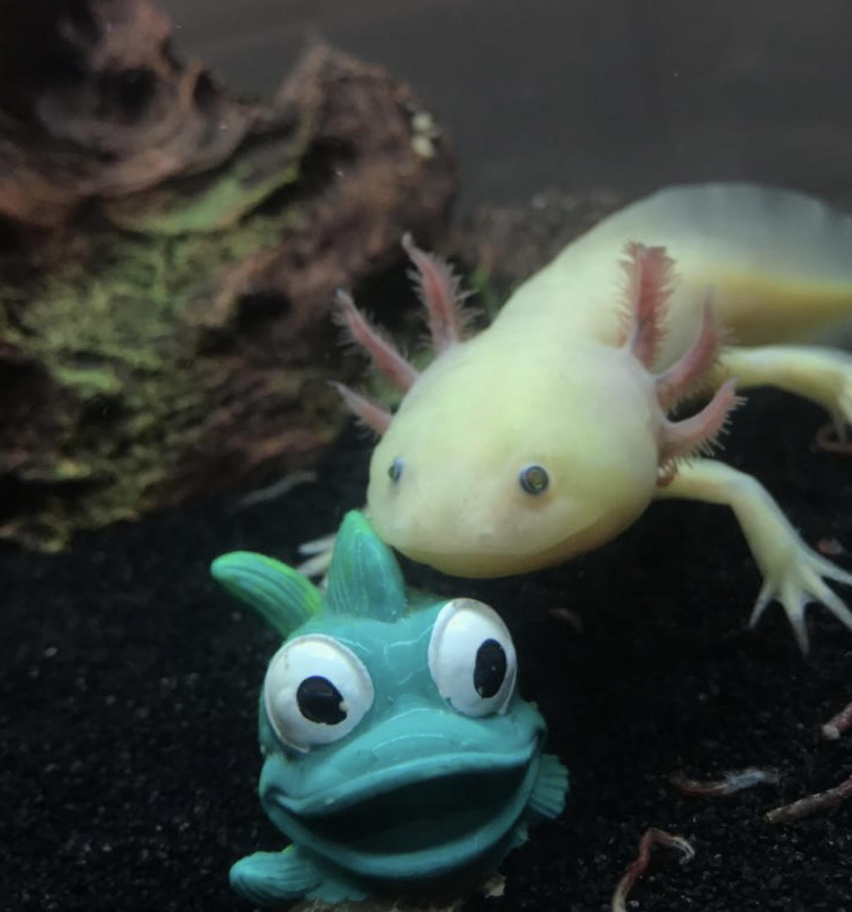

Axolotls
Home | About | Gallery | Resume
A Brief Guide to Axolotls
What Are Axolotls?
Axolotls are fully aquatic amphibians who keep their gills for the
entirety of their lives. This means unlike the related tiger
salamander, they never go through the stage of metamorphosis
How Long Do Axolotls Live?
Axolotls can live for over ten years and can grow to be over a foot
long!

baby axolotl :)
image source CBReptile
Can You Keep Axolotls As Pets?
Axolotls can be kept as pets however, they are a commitment. Proper care and research
is important in order to prepare for them
What Will You Need To Properly Care For An Axolotl?
20-gallon long tank for a single adult, at least 10 additional gallons for each
additional adult
low flow filter
a proper way to keep the temperate down (either a chiller or a cold room)
Important Things To Note
Axolotls cannot be on gravel as they tend to accidently ingest
it, so the tank should be either have a bare bottom or
sand as substrate.
Their temperatures must stay below 70 degrees Fahrenheit
Axolotl are not fond of light, dim light is best for
viewing
A low flow filter helps keep these amphibians clean
Weekly partial water changes are needed to keep the water
clean

My axolotl, Gil, a few years ago. (he is much bigger now)